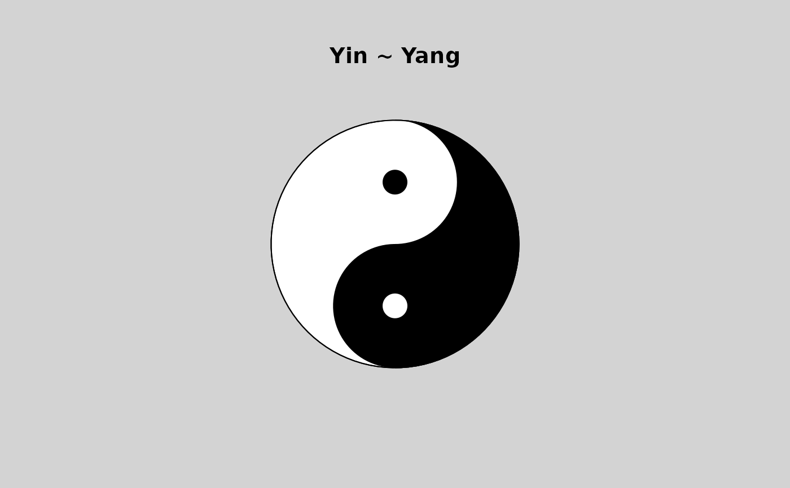
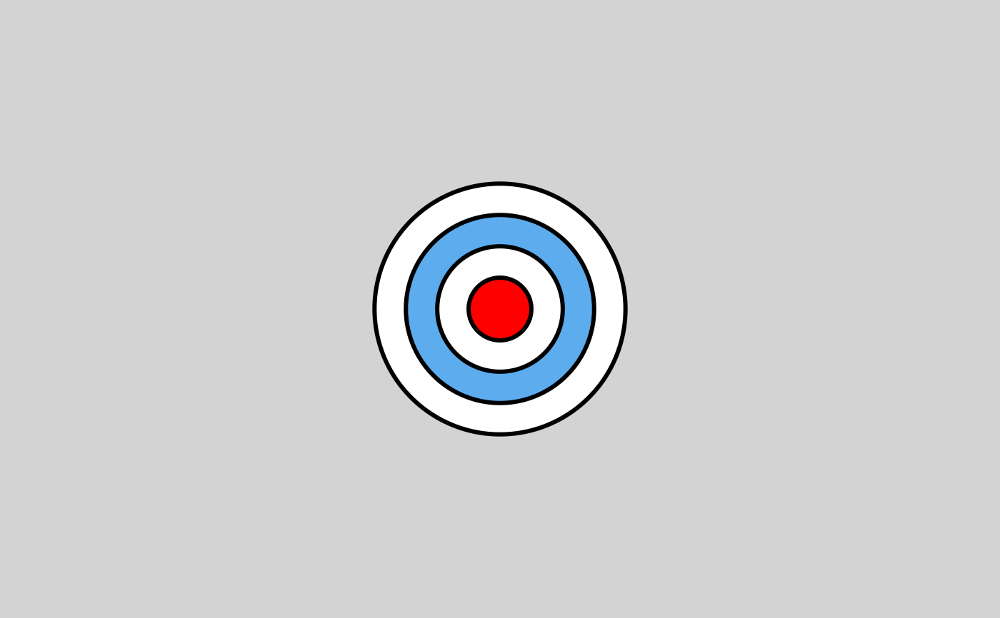
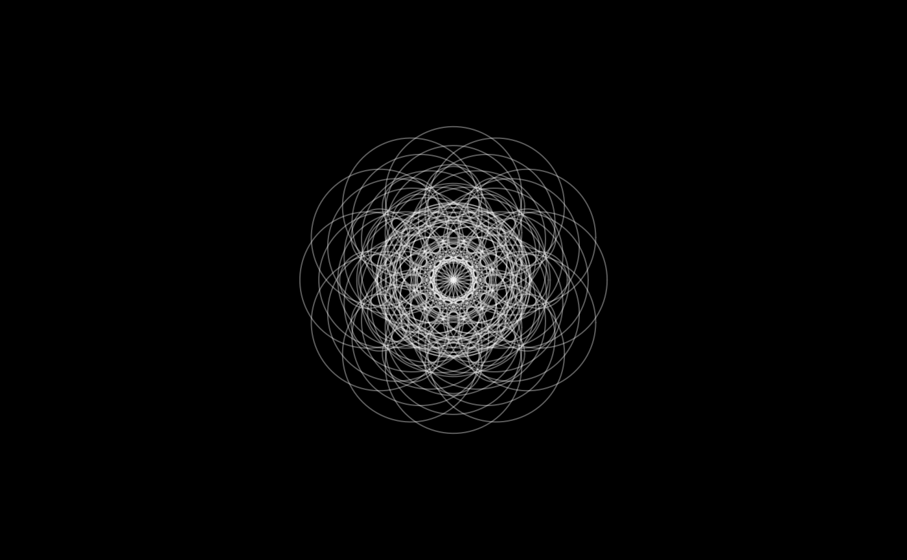

DrawCircle.RdDraw one or several circle on an existing plot.
DrawCircle(x = 0, y = x, r.out = 1, r.in = 0, theta.1 = 0, theta.2 = 2*pi, border = par("fg"), col = NA, lty = par("lty"), lwd = par("lwd"), nv = 100, plot = TRUE)
| x, y | a vector (or scalar) of xy-coordinates for the center(s) of the circle(s). |
|---|---|
| r.out | a vector (or scalar) of the outer radius of the circle. |
| r.in | a vector (or scalar) of a potential inner radius of an annulus. |
| theta.1 | a vector (or scalar) of the starting angle(s). The sectors are built counterclockwise. |
| theta.2 | a vector (or scalar) of the ending angle(s). |
| nv | number of vertices to draw the circle. |
| border | color for circle borders. The default is par("fg"). Use border = |
| col | color(s) to fill or shade the circle(s) with. The default |
| lty | line type for borders and shading; defaults to |
| lwd | line width for borders and shading. |
| plot | logical. If |
All geometric arguments will be recycled.
The function invisibly returns a list of the calculated coordinates for all shapes.
Andri Signorell <andri@signorell.net>
cols <- Pal("Helsana")[1:4] # Draw ring DrawCircle (r.in = 1, r.out = 5, border="darkgrey", col=SetAlpha(hyellow, 0.2), lwd=2)# Draw circle DrawCircle (r.in = 6, border=hgreen, lwd=3)# Draw sectors geom <- rbind(c(-pi, 0, .25, .5), c(0, pi, 1, 2), c(-pi/2, pi/2, 2, 2.5), c(pi/2, 3 * pi/2, 3, 4), c(pi - pi/8, pi + pi/8, 1.5, 2.5)) DrawCircle (r.in = geom[,3], r.out = geom[,4], theta.1 = geom[,1], theta.2 = geom[,2], col = SetAlpha(cols, 0.6), border = cols, lwd=1)DrawCircle (r.out = 1, col="white")DrawCircle ()# rotation x <- seq(-3, 3, length.out=10) y <- rep(0, length.out=length(x)) Canvas(xlim=c(-5,5), bg="black")sapply( (0:11) * pi/6, function(theta) { xy <- Rotate(x, y=y, theta=theta) DrawCircle (x=xy$x, y=xy$y, r.in=2.4, border=SetAlpha("white", 0.2)) } )#> [,1] [,2] [,3] [,4] [,5] [,6] [,7] [,8] [,9] [,10] #> [1,] List,2 List,2 List,2 List,2 List,2 List,2 List,2 List,2 List,2 List,2 #> [2,] List,2 List,2 List,2 List,2 List,2 List,2 List,2 List,2 List,2 List,2 #> [3,] List,2 List,2 List,2 List,2 List,2 List,2 List,2 List,2 List,2 List,2 #> [4,] List,2 List,2 List,2 List,2 List,2 List,2 List,2 List,2 List,2 List,2 #> [5,] List,2 List,2 List,2 List,2 List,2 List,2 List,2 List,2 List,2 List,2 #> [6,] List,2 List,2 List,2 List,2 List,2 List,2 List,2 List,2 List,2 List,2 #> [7,] List,2 List,2 List,2 List,2 List,2 List,2 List,2 List,2 List,2 List,2 #> [8,] List,2 List,2 List,2 List,2 List,2 List,2 List,2 List,2 List,2 List,2 #> [9,] List,2 List,2 List,2 List,2 List,2 List,2 List,2 List,2 List,2 List,2 #> [10,] List,2 List,2 List,2 List,2 List,2 List,2 List,2 List,2 List,2 List,2 #> [,11] [,12] #> [1,] List,2 List,2 #> [2,] List,2 List,2 #> [3,] List,2 List,2 #> [4,] List,2 List,2 #> [5,] List,2 List,2 #> [6,] List,2 List,2 #> [7,] List,2 List,2 #> [8,] List,2 List,2 #> [9,] List,2 List,2 #> [10,] List,2 List,2